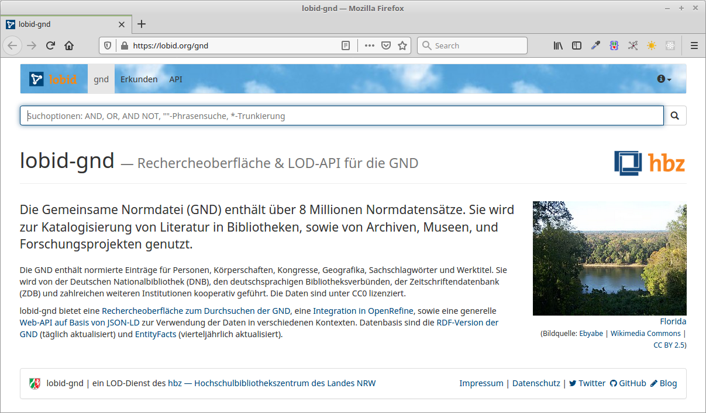
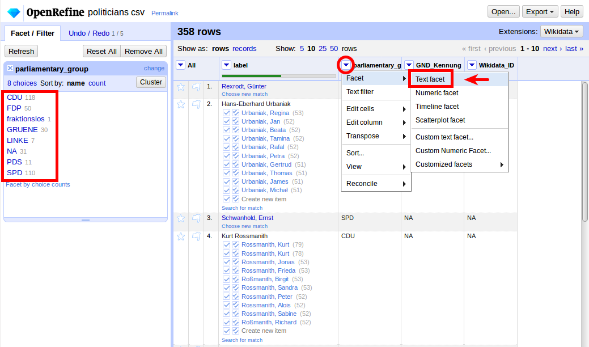

Abgleich & Anreicherung eigener Daten mit der GND
OpenRefine Reconciliation mit lobid-gnd
Fabian Steeg & Adrian Pohl,
Offene Infrastruktur, hbz NRW

Workshop im Rahmen des DINI-KIM, 2021-10-07
Diese Präsentation:
http://slides.lobid.org/2021-kim-reconcile/

Überblick
| Datenquellen und Oberfläche von lobid-gnd |
| Datenabgleich und -anreicherung in OpenRefine |
| Möglichkeiten zur Verbesserung des Matching |
| Standardisierung & W3C Community Group |
| Eigene Daten in OpenRefine verfügbar machen |
Wir haben versucht, Themenwünsche zu berücksichtigen, soweit wir uns damit auskennen
| Datenquellen und Oberfläche von lobid-gnd |
| Datenabgleich und -anreicherung in OpenRefine |
| Möglichkeiten zur Verbesserung des Matching |
| Standardisierung & W3C Community Group |
| Eigene Daten in OpenRefine verfügbar machen |
lobid steht für Linking Open Bibliographic Data
Unter lobid.org publiziert das hbz seit 2011 Linked Open Data (LOD), inzwischen in 3 Diensten
Stellen web-basierte Rechercheoberflächen und Schnittstellen bereit

Gemeinsame Normdatei für Bibliotheken im deutschsprachigen Raum
Datensätze für Personen, Körperschaften, Konferenzen & Veranstaltungen, Geografika, Schlagwörter, Werke
Für die formale Erfassung einer Ressource und für die inhaltliche Erschließung
In den letzten Jahren wird die GND vermehrt auch von Archiven, Museen und Wissenschaftler:innen genutzt
lobid-gnd
/reconcile

Abgleich und Anreicherung lokaler Daten mit der GND

Datenquellen
Die GND wird erstellt und gepflegt durch die GND-Kooperative (Verbünde, Bibliotheken, DNB, ZDB, Agenturen)
Die DNB publiziert die GND u.a. als Linked Open Data
Zusätzliche Anreicherungen, z.B. Links, in EntityFacts
Diese Daten bilden die Grundlage für lobid-gnd
Daten erkunden
Rechercheoberfläche ermöglicht ein manuelles Erkunden der Daten vor einem automatischen Abgleich
Zum Ausprobieren verlinken die folgenden Screenshots auf die entsprechenden Seiten in lobid-gnd
Siehe auch das Tutorial lobid-gnd: Suche und Navigation
Oberfläche

Auto Suggest

Ergebnisliste

Einzeltreffer

Beziehungsgraph

| Datenquellen und Oberfläche von lobid-gnd |
| Datenabgleich und -anreicherung in OpenRefine |
| Möglichkeiten zur Verbesserung des Matching |
| Standardisierung & W3C Community Group |
| Eigene Daten in OpenRefine verfügbar machen |
Was ist OpenRefine?
"A powerful tool for working with messy data"
"cleaning it; transforming it from one format into another; and extending it with web services and external data"
Oberfläche wie Tabellenkalkulation
Läuft im Browser
Wo ist OpenRefine?
Lokal, downloaden und installieren:
https://openrefine.org/download.html
Gehostet, z.B. zum Ausprobieren:
http://openrefine.labs.lobid.org
Wofür ist OpenRefine?
Gut geeigent wo UI/Tabellenkalkulation passt
Fachliche Arbeit
Manuelle Optimierung
Überschaubare Datenmengen
Wofür ist OpenRefine (noch) nicht?
Bisher nicht geeignet für große Dateien, aber eine neue Architektur für größere Datenmengen ist fast fertig
Automatisierung ohne UI nicht mit Bordmitteln, aber mit Zusatztool möglich: openrefine-batch
Was ist Reconciliation?
Abgleichen / Matchen eigener Daten (z.B. Namen von Personen) auf GND-Einträge
Anreicherung durch Übernahme von spezifischen Feldern der gematchten GND-Einträge
Fokus hier ist Reconciliation, auch Grundlagen von OpenRefine, aber es gibt noch viel mehr
Projekt anlegen


Projekt anlegen
openrefine.labs.lobid.org | localhost:3333
name;beruf;ort
J. Weizenbaum;Informatiker;Berlin
Twain, Mark;Schriftsteller;
Kumar, Lalit;;
Jemand;;
(Daten und URL per CTRL+C in die Zwischenablage kopieren)
Abgleich / Reconciliation


Abgleich / Reconciliation
openrefine.labs.lobid.org | localhost:3333
https://lobid.org/gnd/reconcile
(Auf openrefine.labs.lobid.org muss der Dienst nicht ergänzt werden)
Anreicherung
Namen wurden mit GND-IDs assoziiert
Felder der GND-Entitäten stehen so zur Verfügung
Mit diesen können wir unsere lokalen Daten anreichern
d.h. konkret: neue Spalten in unserer Tabelle anlegen


Anreicherung
id,name
1,Haddaway
2,Johannes Geßner
3,Judith Kuckart
4,Rosa Luxemburg
5,Albert Einstein
6,Hazel Brugger
7,Anne Cuneo
8,Vitus Huonder
Projekt anlegen, Namen abgleichen und Berufe anreichern
Anreicherung mit GND-Entitäten
Angereicherte Felder sind z.T. GND-Entitäten
Sind automatisch abgeglichen / reconciled
Können als Grundlage für weitere Anreicherung dienen


Anreicherung mit GND-Entitäten
Wirkungsort und Darstellung des Wirkungsortes anreichern
| Datenquellen und Oberfläche von lobid-gnd |
| Datenabgleich und -anreicherung in OpenRefine |
| Möglichkeiten zur Verbesserung des Matching |
| Standardisierung & W3C Community Group |
| Eigene Daten in OpenRefine verfügbar machen |
Ergebnisse verbessern
Einschränkung der Typen der Zielentitäten
Verwendung zusätzlicher lokaler Daten
Gezielte Suche nach Treffern
Einschränkung der Entitätstypen

Verwendung zusätzlicher lokaler Daten


Gezielte Suche nach Treffern

Beispiele
Verwendung zusätzlicher lokaler Daten
1. Beispiel: Lebensdaten
2. Beispiel: Beruf & Parteizugehörigkeit
1. Beispiel: Lebensdaten

CSV lokal speichern oder direkt per URL: https://blog.lobid.org/data/persons.csv

Project anlegen und Namen abgleichen

Ein erstes Ergebnis:
70% automatisch abgeglichen
Wir wollen die Lebensdaten zur Disambiguierung nutzen
In unseren abzugleichenden Daten z.B. "1904"
Womit gleichen wir ab? z.B. Ellen Frank
"dateOfDeath": [
"1999-09-17"
],
"dateOfBirth": [
"1904-03-09"
]

Expression Language
Für die Transformation verschiedene Sprachen

Wildcards: ? für ein Zeichen, * für beliebig viele Zeichen
Daten bereit für neuen, verbesserten Abgleich

Vorherigen Abgleich zurücksetzen


>95% automatisch abgeglichen
2. Beispiel: Beruf & Parteizugehörigkeit

CSV lokal speichern oder direkt per URL: https://blog.lobid.org/data/politicians.csv


Project anlegen und Namen abgleichen

Ein erstes Ergebnis:
< 60% automatisch abgeglichen
Wir wollen die Parteizugehörigkeit nutzen
In unseren abzugleichenden Daten z.B. SPD
Womit gleichen wir ab? z.B. Willy Brandt
"affiliation": [
{
"id": "https://d-nb.info/gnd/2022139-3",
"label": "Sozialdemokratische Partei Deutschlands"
}
]
Abkürzungen auf eindeutige Identifier mappen
Welche Abkürzungen kommen in den Daten vor?
Wie finden wir die GND-Nummern? z.B. SPD:

Gesuchte Mappings
- SPD →
https://d-nb.info/gnd/??? - CDU →
https://d-nb.info/gnd/??? - GRUENE →
https://d-nb.info/gnd/??? - FDP →
https://d-nb.info/gnd/??? - LINKE →
https://d-nb.info/gnd/??? - PDS →
https://d-nb.info/gnd/???
Mappings
- SPD →
https://d-nb.info/gnd/2022139-3 - CDU →
https://d-nb.info/gnd/7230-8 - GRUENE →
https://d-nb.info/gnd/2124337-2 - FDP →
https://d-nb.info/gnd/37037-X - LINKE →
https://d-nb.info/gnd/10173685-X - PDS →
https://d-nb.info/gnd/5010217-5
In der Text-Facette können wir alle Vorkommen der Werte entsprechend unseres Mappings editieren:

Diese manuelle Schritte können in der Undo/Redo-History extrahiert werden:

Wir bekommen die Editierhistorie als JSON:
[
{
"op": "core/column-addition",
"engineConfig": {
"facets": [],
"mode": "row-based"
},
"baseColumnName": "parliamentary_group",
"expression": "grel:value",
"onError": "set-to-blank",
"newColumnName": "affiliation",
"columnInsertIndex": 2,
"description": "Create column affiliation at index 2 based on column parliamentary_group using expression grel:value"
},
{
"op": "core/mass-edit",
"engineConfig": {
"facets": [],
"mode": "row-based"
},
"columnName": "affiliation",
"expression": "value",
"edits": [
{
"from": [
"GRUENE"
],
"fromBlank": false,
"fromError": false,
"to": "https://d-nb.info/gnd/2124337-2"
},
{
"from": [
"NA"
],
"fromBlank": false,
"fromError": false,
"to": ""
},
{
"from": [
"FDP"
],
"fromBlank": false,
"fromError": false,
"to": "https://d-nb.info/gnd/37037-X"
},
{
"from": [
"CDU"
],
"fromBlank": false,
"fromError": false,
"to": "https://d-nb.info/gnd/7230-8"
},
{
"from": [
"SPD"
],
"fromBlank": false,
"fromError": false,
"to": "https://d-nb.info/gnd/2022139-3"
},
{
"from": [
"LINKE"
],
"fromBlank": false,
"fromError": false,
"to": "https://d-nb.info/gnd/10173685-X"
},
{
"from": [
"PDS"
],
"fromBlank": false,
"fromError": false,
"to": "https://d-nb.info/gnd/5010217-5"
}
],
"description": "Mass edit cells in column affiliation"
}
]
(Hier setzt auch die erwähnte Möglichkeit zur Automatisierung an: die manuell von der Fachebene in der Oberfläche erstellten Schritte können so ohne Oberfläche automatisiert werden)
Operationen können angepasst und reproduziert werden:


Daten bereit für neuen, verbesserten Abgleich


Zwischenergebnis: > 70% automatisch abgeglichen
Implizites Wissen nutzen
Hintergrundwissen, das so gar nicht in den Daten ist
Formal ergänzen für die Disambiguierung
Hier z.B. wissen wir, dass es sich um Politiker:innen handelt
Beruf ergänzen
D.h. wir ergänzen eine neue Spalte mit dem Beruf
Mit dem WertPolitik*
Über die Wildcard decken wir mehrere Formen ab: Politiker, Politikerin, Politikwissenschaftler, Politikwissenschaftlerin


Daten bereit für neuen, verbesserten Abgleich
Vorherigen Abgleich zurücksetzen
Beruf & Affiliation mitschicken


> 80% automatisch abgeglichen
Export
Zahlreiche eingebaute, anpassbare Exportformate
Erweiterte Funktionalität durch Extensions
z.B. für Wikidata, vergleichbar für GND denkbar

Flexibler Export mit Templating

| Datenquellen und Oberfläche von lobid-gnd |
| Datenabgleich und -anreicherung in OpenRefine |
| Möglichkeiten zur Verbesserung des Matching |
| Standardisierung & W3C Community Group |
| Eigene Daten in OpenRefine verfügbar machen |
Standardisierung & W3C Community Group
W3C Entity Reconciliation Community Group
Ziele
Dokumentation und Verbesserung des Protokolls der OpenRefine Reconciliation API
Protokoll als Standard für den Datenabgleich im Web vorantreiben
Werkzeuge rund um das Protokoll bereitstellen
Testbench
Ein Werkzeug zum Testen von Reconciliation-Services
Ein zentrales Verzeichnis verfügbarer Reconciliation-Services (aktuell 38)
Census
Überblick über das Reconciliation-Ökosystem
Verfügbare Services, Clients, Software-Bibliotheken
Andere Clients als OpenRefine
Alma Refine

Cocoda

Specs
Spezifikation des Protokolls für Datenabgleich und -anreicherung
| Datenquellen und Oberfläche von lobid-gnd |
| Datenabgleich und -anreicherung in OpenRefine |
| Möglichkeiten zur Verbesserung des Matching |
| Standardisierung & W3C Community Group |
| Eigene Daten in OpenRefine verfügbar machen |
Eigene Daten in OpenRefine verfügbar machen
1. Einzeldatensätze als JSON anbieten
2. Suche nach Datensätzen implementieren
3. Reconciliation-Protokoll implementieren
Für Details zu 1. und 2. siehe Workshop-Material From LOD to LOUD: building & using JSON-LD APIs
1. Einzeldatensätze als JSON
z.B. http://localhost:9200/loc/work/c000000011/_source
Dann schon nutzbar in OpenRefine: Daten per URL holen
Exkurs: z.B. mit diesen Daten
http://id.loc.gov/resources/works/c000000011
http://id.loc.gov/resources/works/c000000020
http://id.loc.gov/resources/works/c000000026
http://id.loc.gov/resources/works/c000000028
http://id.loc.gov/resources/works/c000000100
ID rauspicken & URL erzeugen, unter der wir JSON finden/selbst anbieten
http://id.loc.gov/resources/works/c000000011 → http://localhost:9200/loc/work/c000000011/_source
"http://localhost:9200/loc/work/" + split(value, '/')[-1] + "/_source"
Das JSON können wir dann zum Anreichern nutzen
2. Suche nach Datensätzen implementieren
z.B. http://localhost:9200/loc/work/_search?q=*
d.h. Indexierung der Daten in Suchmaschine, z.B. Elasticsearch, Solr, Lucene
z.B. mit diesen Daten
Letters from an American farmer
Italian journeys
Report of the trial of George Ryan
The devil upon crutches in England
Educational interests of Colorado
"http://localhost:9200/loc/work/_search?q=\"" + replace(value, " ", "+") + "\""
value.parseJson().hits.hits[0]._source.id
3. Reconciliation-Protokoll implementieren
Mit speziellen Reconciliation-Tools/Frameworks
Mit generischen Web-Entwicklungs-Tools/Frameworks (JSON API)
Testen mit Testbench
In Testbench abgleichen
Einzel-Abgleich simulieren für "Brandt, Willy" mit Beruf und Affiliation (wie im 2. Beispiel vorhin)
Zusammenarbeit von Fachebene & Entwicklung
Schon erster Schritt, Bereitstellung von Einzeldaten als JSON kann fachlich in OpenRefine getestet werden
Bis hin zur Evaluation der Scores beim Abgleich mit disambiguierenden lokalen Daten in der Testbench
Ermöglicht auf vielen Ebenen die unmittelbare Zusammenarbeit von Fachebene & Entwicklung
Weitere Informationen
GND reconciliation for OpenRefine
Implementierung & Details in lobid-gnd
Danke an Felix Ostrowski und Florian Gilberg für die Beispiel-Datensets/-Anwendungsfälle